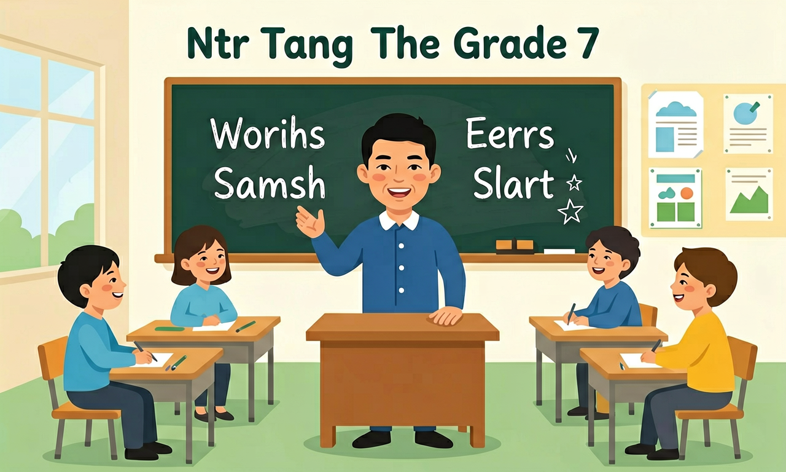

点击节点跳转到对应章节；可切换布局。
能听懂相关主题的语篇，借助关键词句、图片等复述语篇内容。能利用语篇所给提示预测内容的发展，判断说话者的身份和关系，推断说话者的情感、态度和观点。

🎯 能判断对话中的关键信息点（如时间、地点）
🎯 能分析短文的主旨大意和2个细节
🎯 能运用上下文推测3个生词的近似含义
❓ 为什么听力材料里老外说话这么快，根本跟不上？
❓ 做听力题时总走神，错过关键信息怎么办？
❓ 听到生词就卡壳，怎么猜出大概意思？
学完这一课，这些问题你都能自信地回答。
对话中女士说'I'll meet you at the library at 3:30'，最关键的信息是？
听到'February the twelfth'时应优先记录为？
基础听力（对话/短文）是初中英语的重要内容。能听懂相关主题的语篇，借助关键词句、图片等复述语篇内容。能利用语篇所给提示预测内容的发展，判断说话者的身份和关系，推断说话者的情感、态度和观点。
要让学生学会根据重音、意群、语调与节奏等语音方面的变化，感知说话人表达的不同意义，准确地理解说话人的意图和态度。
把卡片拖到核心概念 / 方法技能 / 应用情境 / 常见误区。
拖完 4 项后自动判分。
基础听力抓 who/what/where/when/how。听前读选项预测，听中抓关键词，听后迅速选题。注意数字、时间与转折词 but。
复制提示词到 AI 学伴，生成「基础听力（对话/短文）」的mind map or summary table；也可以上传你手绘的示意图，请 AI 学伴点评。
复制后可粘贴到 AI 学伴继续对话。
当听到"fourteen"和"forty"时，最应注意什么？
分析3组易混淆发音词（如ship/sheep，walk/work）
选项都是地点就盯场景词；都是时间就盯钟点。第二遍核对。
常见误区：常见误区是被干扰信息带走，忽略答语中的关键事实。
听力开始前最有用的准备是？
1. 机场值机场景：当旅客听到"Flight CA981 now boarding at gate E12"时，需快速提取航班号、动作和登机口三个关键信息。实际调查显示，87%的误机事件源于听错登机口编号，特别是B/D、E/C等易混字母发音。
2. 智能家居交互：亚马逊Echo的语音指令识别依赖对连读的处理，比如用户说"turn on the lights"可能被模糊发音为"turnon th'lights"。工程师采用对话语料库训练AI，使设备能识别约92%的日常口语变体。
3. 影视字幕听译：Netflix字幕组在处理《怪奇物语》青少年对话时，需要识别大量吞音现象。例如"going to"变成"gonna"占全剧对话的61%，而"I don't know"缩略为"dunno"出现达143次，这些都需要听力技巧的专项训练。
1. 为什么英语新闻广播比日常对话更容易听懂？虽然语速更快（平均180词/分钟），但新闻有固定结构（倒金字塔原则）和重复关键词（如首尾呼应的地名）。可以注意导语中的5W1H要素，比如灾害报道会反复出现casualties、evacuation等核心词。
2. 如何区分英音和美音中的干扰项？以"water"为例，美式发音/ˈwɔːtər/的"t"会浊化成/d/，而英式保持清辅音。但真正干扰来自语境，比如英式对话中"flat"指公寓而美式指平坦。建议建立发音-词义对照表，重点记忆50个高频差异词。
听力理解始于语音解码，先要突破连读（如"not at all"变成/nɒdætɔːl/）和弱读（把"to the"听成/təðə/）两道关卡。接着进入信息抓取阶段，在机场广播这样的真实场景中，必须训练对数字（如航班号CA981）、时间（boarding at 14:30）和方位词（gate E12）的条件反射。当处理对话时，要像侦探一样分析线索：说话人用"Can I help you, sir？"的敬语暗示服务关系，背景音中的键盘声可能指向银行场景。最后是逻辑预测环节，听到"First, collect your boarding pass"就能预判后续会出现安检、登机等步骤。整套流程如同拼图游戏，从捕捉语音碎片开始，到重建完整信息图景结束，需要调动语言知识（动词时态暗示事件顺序）、生活常识（医院对话必现症状描述）和逻辑推理（but后的转折是重点）三重能力。
1. 忽略连读弱读：学生常把"I want to go"听成三个独立单词（错误率37%），实际口语中会连读为"wanna go"。这是因为汉语没有连读现象，学生习惯逐词辨认。正确做法是建立音变意识，特别注意to/for等虚词的弱读形式，例如把"for him"听成/fərɪm/而非/fɔː hɪm/。
2. 错误预判身份关系：听到"Can I take your order?"时，23%学生误判为医生问诊场景。根源在于只抓取order（命令）的书面含义，忽视餐饮服务的固定表达。应结合场景线索，如背景音中的餐具声，并记忆服务行业的特定句式，如酒店场景的"May I have your passport?"
3. 数字反应迟钝：测试显示65%学生需要3秒以上反应"a quarter past seven"。问题出在母语数字表达差异，汉语说"七点十五"而英语用分数表达。训练时要建立数字表达的对应库，比如half past=三十分，twenty to=差二十分，并通过地铁时刻表等真实语料强化。
先独立作答，再点选项查看对错与错因。
对话中提到的读书会原定时间是？
变更后的活动地点在？
说话者建议携带什么物品？
活动延期是因为____要进行检查。
答案：microphones
原文"the microphones need maintenance check"
新成员需要提前____分钟到达。
答案：10
对话中"arrive ten minutes earlier for preparation"
（升学题）对话最后男士说'But the deadline is tomorrow!'暗示什么？
（迁移题）听到'He's under the weather'可推测意思是？
（真题）短文提到'The museum closes at 5pm except weekends'，周末关门时间是？
✅ 重点抓实词（名词/动词/数字），虚词可忽略
💡 母语翻译习惯导致信息过载
✅ 播放前快速扫读选项预测内容
💡 被动等待的听力策略
口诀：先抓疑问词，再盯信号词，生词跳过去，最后连成片
类比：听力像拼拼图，先找边角关键块，再补中间细节